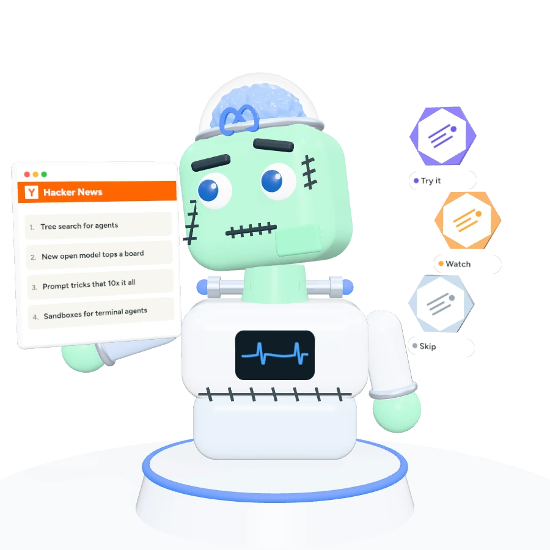
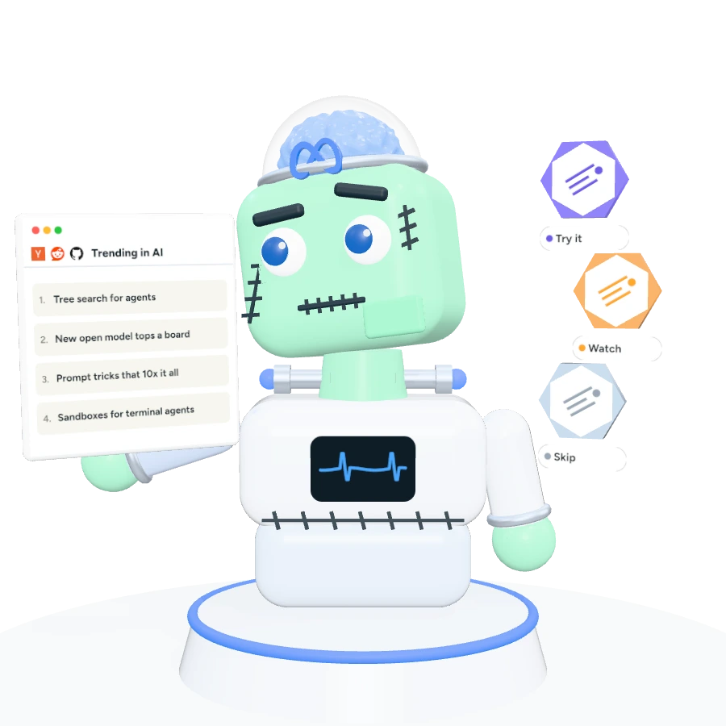
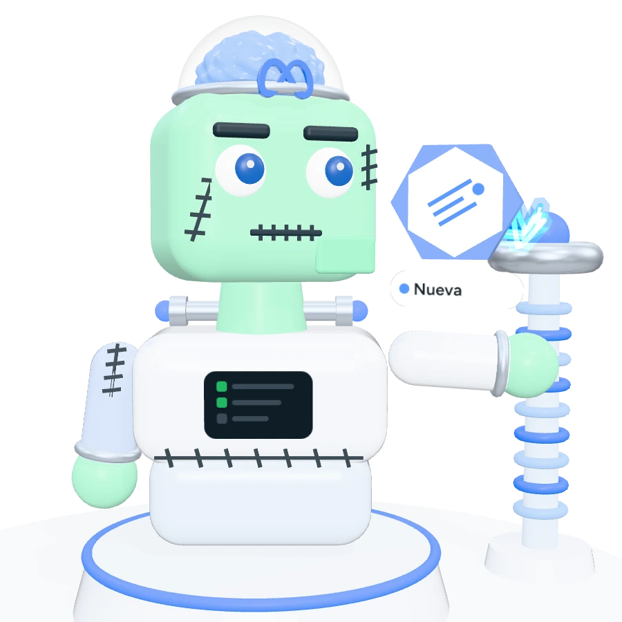
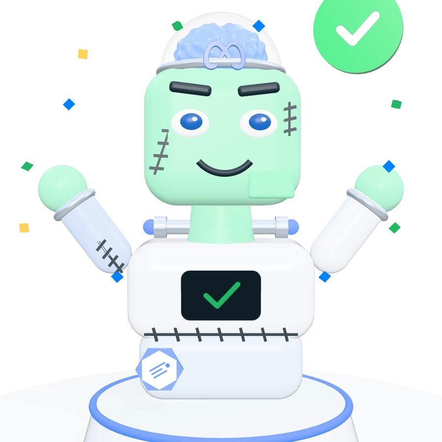
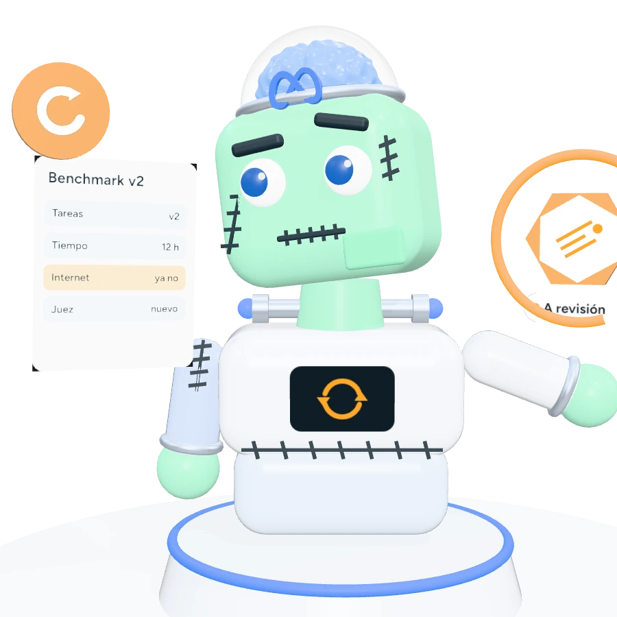
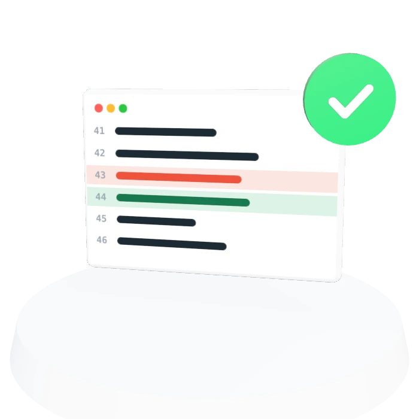
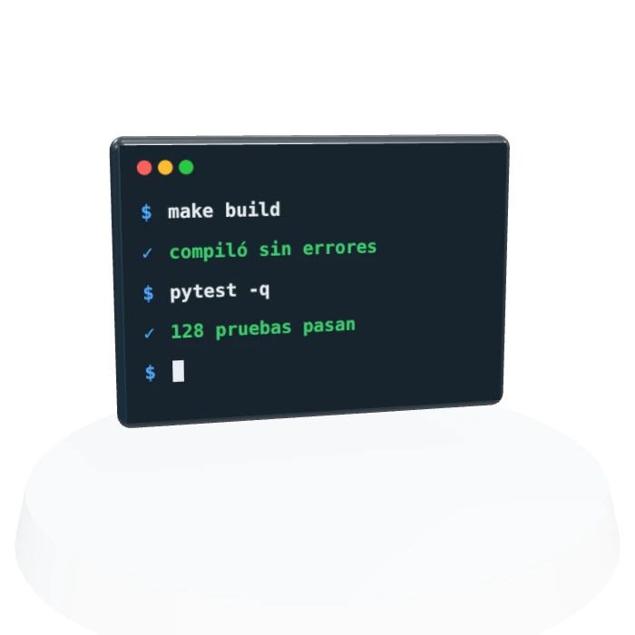
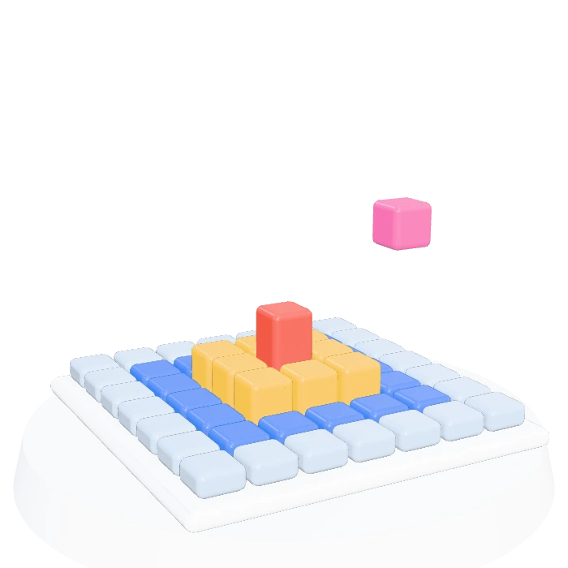
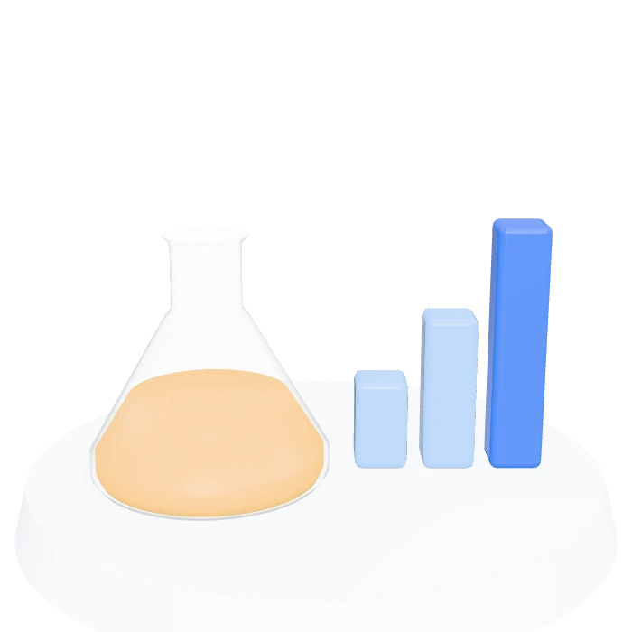

Phase 1 of 5
Researches
Reads what's new in AI and picks what's worth trying.

Agentztein is an AI research agent that creates its own skills, tests them on frontier benchmarks and keeps only the ones that make it better, without forgetting what it already knew.
Watches Hacker News every dayResearches what's new in AI and decides what to tryA five-phase cycle that never stops. It researches what's new, learns from what fails, and nothing is used without going through the lab.

“Tree search”? Worth an experiment. + idea+ idea Experiment
3 of 3 failures: I searched the web in a new game. ✕ run 14✕ run 15✕ run 21 ✦ New: explore first
Does it help without breaking anything?Current1/4
Candidate3/4
Old tasks4/4 ✓

I'm keeping it! Only for new games.
The benchmark changed: I only review what it touches.Phase 1 of 5
Reads what's new in AI and picks what's worth trying.
Phase 2 of 5
Groups its failures and writes one skill for the most common.
Phase 3 of 5
Candidate against the current version, on new and old tasks.
Phase 4 of 5
Only if it improves, breaks nothing and a person approves it.
Phase 5 of 5
If a benchmark changes, only the affected skills go back to review.
Each station is a frontier benchmark. Move Agentztein, take it to a station and run an exercise: watch it fail, create a skill, test it and keep it.

Its lab
There are no Agentztein results on these benchmarks yet: they are the goal. When there are, all of them will be published, including the bad ones.
Open one to see its lab: how it works, what it's made of, how it's scored and how Agentztein could improve on it.

Fixing real bugs in open-source software projects.

Long terminal tasks: building, configuring servers and debugging, without help.

New interactive games where the rules must be figured out without instructions.
Finding very hard-to-find information by browsing the web.

AI research: machine learning competitions and replicating papers.

How many hours of expert work it completes on its own.
The lab is built. Next: connect its brain and wake Agentztein up.
The system to create, test and approve skills, with a record of everything, already tested on practice tasks.
Muse Spark solving its first frontier benchmark and recording everything.
Have it propose its own skills and test them without breaking what came before.
We compare it with three other ways of improving. If it doesn't win, we'll say so.